자동차정비기사 (2018-03-04 기출문제)
1과목: 일반기계공학
1. 리벳이음에서 강판의 효율을 나타내는 식으로 옳은 것은? (단, p는 피치, d는 리벳구멍의 지름이다)
- (p-d)/p
- (d-p)/p
- (d-p)/d
- (p-d)/d
(정답률: 56%)

2. 외경이 내경의 1.5배인 중공축이 중실축과 같은 비틀림 모멘트를 전달하고 있을 때 단면적(중공축의 면적/중실축의 면적)비는 약 얼마인가?
- 0.76
- 0.70
- 0.64
- 0.58
(정답률: 32%)
3. 납땜에 관한 설명으로 틀린 것은?
- 사용하는 용가재의 종류에 따라 크게 연납과 경납으로 구분된다.
- 융점이 600℃ 이상인 용가재를 사용하여 납땜하는 것을 연납땜이라 한다.
- 납땜의 성패는 용접 모재인 고체와 땜납인 액체가 어느 정도의 친화력을 갖고 서로 접촉될 수 있느냐에 달려 있다.
- 금속을 접합하려고 할 때 접합할 모재는 용융시키지 않고 모재보다 용융점이 낮은 용가재를 사용하여 접합하는 방법이다.
(정답률: 67%)
4. 일반적인 줄작업 시 줄의 사용 순서로 옳은 것은?
- 유목 → 세목 → 황목 → 중목
- 유목 → 황목 → 중목 → 세목
- 황목 → 중목 → 세목 → 유목
- 황목 → 중목 → 유목 → 세목
(정답률: 54%)
5. 다음 중 유동하고 있는 액체의 압력이 국부적으로 저하되어 증기나 함유 기체를 포함하는 기포가 발생하는 현상은?
- 공동현상
- 분리현상
- 재생현상
- 수격현상
(정답률: 63%)
6. 실린더의 피스톤 로드에 인장하중이 걸리면 실린더는 끌리는 영향을 받게 되는데, 이러한 영향을 방지하기 위하여 인장하중이 가해지는 쪽에 설치된 밸브는?
- 리듀싱 밸브
- 시퀀스 밸브
- 언로드 밸브
- 카운터밸런스 밸브
(정답률: 57%)
7. 그림과 같은 외팔보에서 폭×높이＝b×h일 때, 최대굽힘응력(σmax)을 구하는 식은?
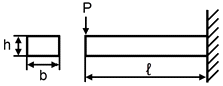
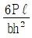
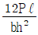
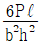
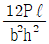
(정답률: 56%)
8. 내충격성과 성형성이 우수할 뿐만 아니라 색조와 표면광택 등의 외관 마무리성이 좋고 도장이 용이하기 때문에 자동차 외장 및 내장부품에 많이 사용되는 고분자 재료는?
- NR
- BC
- ABS
- SBR
(정답률: 63%)
9. 그림과 같은 직경 30㎝의 블록 브레이크에서 레버 끝에 300N의 힘을 가할 때 블록 브레이크에 걸리는 토크는 약 몇 Nㆍm인가? (단, 마찰계수는 0.2로 한다.)
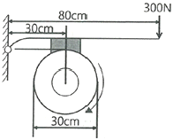
- 14
- 24
- 34
- 44
(정답률: 50%)
10. 축에 직각인 하중을 지지하는 베어링은?
- 피벗 베어링
- 칼라 베어링
- 레이디얼 베어링
- 스러스트 베어링
(정답률: 66%)
11. 다음 중 회전운동을 직선운동으로 바꾸는 기어로 가장 적절한 것은?
- 스크류 기어(screw gear)
- 내접 기어(internal gear)
- 하이포이드 기어(hypoid gear)
- 래크와 피니언(rack & pinion)
(정답률: 69%)
12. 다음 중 주물제품에서 균열(crack)의 원인으로 가장 거리가 먼 것은?
- 주물을 급랭시킬 때
- 탕구가 매우 작을 때
- 살 두께의 차이가 너무 클 때
- 모서리가 직각으로 되어 있을 때
(정답률: 56%)
13. 재료에 압력을 가해 다이에 통과시켜 다이구멍과 같은 모양의 긴 제품을 제작하는 가공법은?
- 단조
- 전조
- 압연
- 압출
(정답률: 68%)
14. 철과 비교한 알루미늄의 특성으로 틀린 것은?
- 용융점이 낮다.
- 열전도율이 높다.
- 전기 전도성이 좋다.
- 비중이 4.5로 철의 약 1/2이다.
(정답률: 58%)
15. 축방향 인장하중을 받는 균일 단면봉에서 최대 수직응력이 60MPa일 때 최대 전단응력은 몇 MPa인가?
- 60
- 40
- 30
- 20
(정답률: 64%)
16. 지름 10㎜의 원형단면 축에 길이방향으로 785N의 인장하중이 걸릴 때 하중방향에 수직인 단면에 생기는 응력은 약 몇 N/mm2인가?
- 7.85
- 10
- 78.5
- 100
(정답률: 37%)
17. 안장키(saddle key)에 대한 설명으로 옳은 것은?
- 임의의 축 위치에 키를 설치할 수 없다.
- 중심각이 120˚인 위치에 2개의 키를 설치한다.
- 원형단면의 테이퍼핀 또는 평행핀을 사용한다.
- 마찰력만으로 회전력을 전달시키므로 큰 토크의 전달에는 곤란하다.
(정답률: 56%)
18. 다음 중 압력제어밸브가 아닌 것은?
- 체크밸브
- 릴리프밸브
- 시퀀스밸브
- 압력조절밸브
(정답률: 57%)
19. 탄소강이 아공석강 영역(C ＜ 0.77%)에서 탄소 함유량이 증가함에 따라 변화되는 기계적 성질로 옳은 것은?
- 경도와 충격치는 감소한다.
- 경도와 충격치는 증가한다.
- 경도는 증가하고, 충격치는 감소한다.
- 경도는 감소하고, 충격치는 증가한다.
(정답률: 60%)
20. 커터의 지름이 80mm이고 커터의 날수가 8개인 정면 밀링커터로 길이 300mm의 가공물 절삭할 때 가공시간은 약 얼마인가? (단, 절삭속도 100m/min, 1날 당 이송 0.08mm로 한다)(오류 신고가 접수된 문제입니다. 반드시 정답과 해설을 확인하시기 바랍니다.)
- 1분 15초
- 1분 29초
- 1분 52초
- 2분 20초
(정답률: 49%)
2과목: 기계열역학
21. 온도가 각기 다른 액체 A(50℃), B(25℃), C(10℃)가 있다. A와 B를 동일질량으로 혼합하면 40℃로 되고, A와 C를 동일질량으로 혼합하면 30℃로 된다. B와 C를 동일 질량으로 혼합할 때는 몇 ℃로 되겠는가?
- 16.0℃
- 18.4℃
- 20.0℃
- 22.5℃
(정답률: 39%)
22. 이상적인 복합 사이클(사바테 사이클)에서 압축비는 16, 최고 압력비(압력상승비)는 2.3, 체절비는 1.6이고, 공기의 비열비는 1.4일 때 이 사이클의 효율은 약 몇 %인가?
- 55.52
- 58.41
- 61.54
- 64.88
(정답률: 28%)
23. 그림과 같이 온도(T)-엔트로피(S)로 표시된 이상적인 랭킨사이클에서 각 상태의 엔탈피(h)가 다음과 같다면 이 사이클의 효율은 약 몇 %인가? (단, h1＝30kJ/kg, h2＝31kJ/kg, h3＝274kJ/kg, h4＝668kJ/kg, h5＝764kJ/kg, h6＝478kJ/kg이다.)
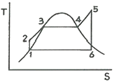
- 39
- 42
- 53
- 58
(정답률: 43%)
24. 520K의 고온 열원으로부터 18.4kJ 열량은 받고 273K의 저온 열원에 13kJ의 열량 방출하는 열기관에 대하여 옳은 설명은?
- clausius 적분값은 -0.0122kJ/K이고, 가역과정이다.
- clausius 적분값은 -0.0122kJ/K이고, 비가역과정이다.
- clausius 적분값은 ＋0.0122kJ/K이고, 가역과정이다.
- clausius 적분값은 ＋0.0122kJ/K이고, 비가역과정이다.
(정답률: 51%)
25. 이상기체 공기가 안지름 0.1m인 관을 통하여 0.2m/s로 흐르고 있다. 공기의 온도는 20℃ 압력은 100kPa, 기체상수는 0.287kJ/(kgㆍK)라면 질량유량은 약 몇 kg/s인가?
- 0.0019
- 0.0099
- 0.0119
- 0.0199
(정답률: 40%)
26. 어떤 기체가 5kJ의 열을 받고 0.18kNㆍm의 일을 외부로 하였다. 이때의 내부에너지의 변화량은?
- 3.24kJ
- 4.82kJ
- 5.18kJ
- 6.14kJ
(정답률: 49%)
27. 랭킨 사이클에서 25℃, 0.01MPa 압력의 물 1kg을 5MPa 압력의 보일러로 공급한다. 이때 펌프가 가역단열과정으로 작용한다고 가정할 경우 펌프가 한 일은 약 몇 kJ인가? (단, 물의 비체적은 0.001m3/kg이다.)
- 2.58
- 4.99
- 20.10
- 40.20
(정답률: 49%)
28. 압력 2MPa, 온도 300℃의 수증기가 20m/s 속도로 증기터빈으로 들어간다. 터빈 출력에서 수증기 압력이 100kPa, 속도는 100m/s이다. 가역 단열과정으로 가정 시, 터빈을 통과하는 수증기 1kg당 출력일은 약 몇 kJ/kg인가? (단, 수증기표로부터 2MPa, 300℃에서 비엔탈피는 3023.5kJ/kg, 비엔트로피는 6.7663kJ/(kgㆍK)이고, 출구에서의 비엔탈피 및 비엔트로피는 아래 표와 같다.)
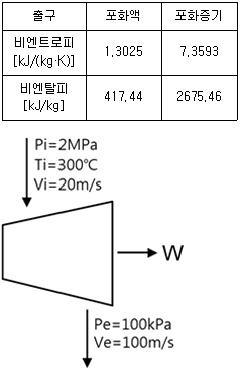
- 1534
- 564.3
- 153.4
- 764.5
(정답률: 42%)
29. 단위질량의 이상기체가 정적과정 하에서 온도가 T1에서 T2로 변하였고, 압력도 P1에서 P2로 변하였다면, 엔트로피 변화량 ΔS는? (단, Cv와 Cp는 각각 정적비열과 정압비열이다.)
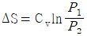
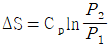
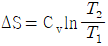
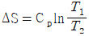
(정답률: 47%)
30. 다음 중 강성적(강도성, intensive) 상태량이 아닌 것은?
- 압력
- 온도
- 엔탈피
- 비체적
(정답률: 54%)
31. 열역학적 변화와 관련하여 다음 설명 중 옳지 않은 것은?
- 단위 질량당 물질의 온도를 1℃ 올리는데 필요한 열량을 비열이라 한다.
- 정압과정으로 시스템에 전달된 열량은 엔트로피 변화량과 같다.
- 내부에너지는 시스템의 질량에 비례하므로 종량적(extensive) 상태량이다.
- 어떤 고체가 액체로 변화할 때 융해(melting라고 하고, 어떤 고체가 기체로 바로 변화할 때 승화(sublimation)라고 한다.
(정답률: 46%)
32. 저온실부터 46.4kW의 열을 흡수할 때 10kW의 동력을 필요로 하는 냉동기가 있다면, 이 냉동기의 성능계수는?
- 4.64
- 5.65
- 7.49
- 8.82
(정답률: 52%)
33. 증기터빈 발전소에서 터빈입구의 증기 엔탈피는 출구의 엔탈피보다 136kJ/kg 높고, 터빈에서의 열손실은 10kJ/kg이다. 증기속도는 터빈 입구에서 10m/s이고, 출구에서 110m/s일 때 이 터빈에서 발생시킬 수 있는 일은 약 몇 kJ/kg인가?
- 10
- 90
- 120
- 140
(정답률: 43%)
34. 엔트로피(s) 변화 등과 같은 직접 측정할 수 없는 양들을 압력(P), 비체적(v), 온도(T)와 같은 측정가능한 상태량으로 나타내는 Maxwell관계식과 관련하여 다음 중 틀린 것은?
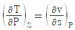
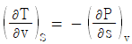
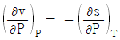
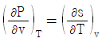
(정답률: 43%)
35. 공기압축기에서 입구 공기의 온도와 압력은 각각 27℃, 100kPa이고, 체적유량은 0.01m3/s이다. 출구에서 압력이 400kPa이고, 이 압축기의 등엔트로피 효율이 0.8일 때, 압축기의 소요동력은 약 몇 kW인가? (단, 공기의 정압비열과 기체상수는 각각 1kJ/(kgㆍK), 287kJ/(kgㆍK)이고, 비열비는 1.4이다.)
- 0.9
- 1.7
- 2.1
- 3.8
(정답률: 30%)
36. 다음 4가지 경우에서 ( ) 안의 물질이 보유한 엔트로피가 증가한 경우는?
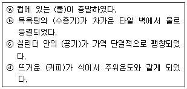
- ⓐ
- ⓑ
- ⓒ
- ⓓ
(정답률: 52%)
37. 대기압이 100kPa일 때, 계기압력이 5.23MPa인 증기의 절대압력은 약 몇 MPa인가?
- 3.02
- 4.12
- 5.33
- 6.43
(정답률: 63%)
38. 초기 압력 100kPa, 초기 체적 0.1m3인 기체를 버너로 가열하여 기체 체적이 정압과정으로 0.5m3이 되었다면 이 과정 동안 시스템이 외부에 한 일은 약 몇 kJ인가?
- 10
- 20
- 30
- 40
(정답률: 43%)
39. 이상적인 오토 사이클에서 단열압축되기 전 공기가 101.3kPa, 21℃이며, 압축비 7로 운전할 때 이 사이클의 효율은 약 몇 %인가? (단, 공기의 비열비는 1.4이다.)
- 62%
- 54%
- 46%
- 42%
(정답률: 34%)
40. 이상기체가 정압과정으로 dT만큼 온도가 변하였을 때 1kg당 변화된 열량 Q는? (단, Cv는 정적비열, Cp는 정압비열, k는 비열비이다)
- Q＝CvdT
- Q＝k2CvdT
- Q＝CpdT
- Q＝kCpdT
(정답률: 49%)
3과목: 자동차기관
41. 전자제어 가솔린엔진에서 흡기온도 센서의 기능은?
- 연료분사량을 보정
- 아이들 상태를 유지
- 엔진 회전수를 검출
- 기본 점화시기를 결정
(정답률: 63%)
42. 전자제어 연료분사장치의 흡입 공기량 계측방식 중 공기유량센서가 직접 흡입공기량을 계측하여 연료분사량을 결정하는 방식은?
- 매스플로 방식
- D-제트로닉 방식
- 스로틀 스피드방식
- 스피드 덴시티 방식
(정답률: 60%)
43. 전자제어 가솔린엔진에서 연료 압력조절기에 대한 설명으로 옳은 것은?
- 가속 시 연료압력은 낮아진다.
- 시동 시 연료압력은 낮아진다.
- 엔진 진공에 관계없이 인젝터의 연료압력은 일정하다.
- 연료압력 조절기의 진공호스를 분리하면 연료압력은 상승한다.
(정답률: 52%)
44. 열효율이 24.5%인 4행정 4실린더 엔진을 55PS으로 30분간 운전시켰을 때 소모되는 연료량은 약 몇 ℓ인가? (단, 1PS당 1시간의 일량은 632.5kcal, 연료의 저위발열량은 11000kcal/kg, 연료비중은 0.73이다.)
- 8.84
- 9.84
- 17.68
- 19.68
(정답률: 24%)
45. 고정식 냉각팬을 사용하는 수냉식 냉각장치와 비교한 가변 구동식 냉각팬의 특징으로 옳은 것은?
- 팬의 작동소음이 크다.
- 이용 가능한 축출력이 감소한다.
- 정상온도에 도달하는 시간이 길다.
- 작동온도가 거의 균일하게 유지된다.
(정답률: 56%)
46. 제동마력이 155PS, 도시마력이 182PS인 엔진에서 1시간당 연료소비량이 80kg일 때 제동열 효율과 도시열효율은 약 몇 %인가? (단, 연료의 저위발열량은 10600kcal/kg이다.)
- 제동 열효율 : 11.56%, 도시 열효율 : 13.57%
- 제동 열효율 : 12.75%, 도시 열효율 : 14.54%
- 제동 열효율 : 13.15%, 도시 열효율 : 14.87%
- 제동 열효율 : 14.68%, 도시 열효율 : 15.25%
(정답률: 28%)
47. CNG자동차에서 가스 실린더 내 200bar의 연료압력을 8~10bar로 감압시켜주는 밸브는?
- 마그네틱 밸브
- 저압 잠금밸브
- 레귤레이터밸브
- 연료량 조절밸브
(정답률: 62%)
48. 유해 배출가스를 저감시키는 삼원촉매장치의 촉매가 아닌 것은?
- 백금(Pt)
- 팔라듐(Pd)
- 로듐(Rh)
- 알루미늄(Al)
(정답률: 67%)
49. 실린더 벽 마모량을 측정할 때 사용하는 측정기가 아닌 것은?
- 다이얼 게이지
- 내측 마이크로미터
- 실린더 보어 게이지
- 텔레스코핑 게이지와 외측 마이크로미터
(정답률: 60%)
50. 디젤엔진에서 딜리버리 밸브의 작용이 아닌 것은?
- 후적 현상을 방지한다.
- 분사 후의 잔류 연료를 탱크로 되돌려 준다.
- 플런저에 의한 연료의 송출이 끝날 때 닫힌다.
- 분사 파이프에서 펌프로 연료가 역류하는 것을 방지한다.
(정답률: 51%)
51. 가솔린엔진의 공연비와 배출가스 농도의 관계를 나타내는 아래 그림에서 ⓐ곡선의 성분은?
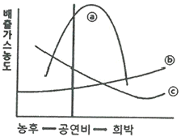
- CO
- NOx
- HC
- SOx
(정답률: 64%)
52. 전자제어 가솔린엔진에서 스로틀밸브의 위치를 감지하는 센서는?
- AFS
- MAP
- TPS
- ATS
(정답률: 75%)
53. DOHC 엔진의 장점이 아닌 것은?
- 응답성 개선
- 마찰손실 저감
- 흡입효율 개선
- 허용 최고 회전수 향상
(정답률: 55%)
54. 가솔린엔진에 사용되는 내장형 연료펌프에 대한 설명 중 옳은 것은?
- 펌프 소음이 적다.
- 별도 냉각이 필요하다.
- 연료필터가 필요 없다.
- 체크밸브가 필요 없다.
(정답률: 55%)
55. 가솔린 엔진에서 평균 유효압력을 증가시키는 방법으로 틀린 것은?
- 배압 증가
- 충진율 증가
- 압축비 증가
- 흡기온도 저하
(정답률: 45%)
56. 냉각장치에서 냉각수가 줄어드는 직접적인 원인이 아닌 것은?
- 라디에이터 캡 불량
- 라디에이터 호스불량
- 구동벨트(팬벨트) 풀림
- 서모스탯의 하우징과 개스킷 불량
(정답률: 69%)
57. 피스톤 링의 플러터(flutter)현상을 방지하는 방법으로 틀린 것은?
- 고온ㆍ고압에 견딜 수 있도록 내열성이 양호할 것
- 실린더 벽에 상처를 주지 않도록 장력이 낮을 것
- 실린더와 접촉을 견딜 수 있도록 내마멸성이 양호할 것
- 연소열을 실린더 벽으로 전달하여 냉각작용이 되도록 열전도가 양호할 것
(정답률: 69%)
58. 과급시스템에서 터빈에 유입되는 배기가스의 양을 제어하는 밸브는?
- 서모 밸브
- 터보 밸브
- 캐니스터 밸브
- 웨이스트 게이트 밸브
(정답률: 57%)
59. 전자제어 가솔린엔진의 연료장치 점검 및 정비 방법으로 틀린 것은?
- 인젝터를 조립할 때는 무리한 힘을 가하지 않는다.
- 엔진 정지 후 연료압력이 서서히 떨어지면 연료펌프를 가장 먼저 교체해야 한다.
- 연료압력 조절기의 검사는 공회전 상태에서 진공호스를 분리시키고 끝을 막은 후 연료압력을 측정한다.
- 연료필터가 막힌 경우나 연료펌프의 공급압력이 누설된 경우에는 일반적으로 연료압력이 낮게 측정된다.
(정답률: 61%)
60. 자동차용 연료에 혼합된 탄화수소 분자구조에 따른 분류로 틀린 것은?
- 파라핀계
- 페놀계
- 나프텐계
- 올레핀계
(정답률: 61%)
4과목: 자동차새시
61. 하이브리드 자동차의 동력전달방식에 해당하지 않는 것은?
- 직렬형
- 병렬형
- 수직형
- 직ㆍ병렬형
(정답률: 73%)
62. TCS(traction control system)에서 구동력을 제어하기 위해 사용되는 입력신호가 아닌 것은?
- 차륜속도 신호
- 차고신호
- 가속페달 신호
- 변속신호
(정답률: 60%)
63. 바퀴의 정적평형이 불량할 때 발생하는 바퀴의 상ㆍ하 진동현상은?
- 트램핑
- 서징
- 바운싱
- 시미
(정답률: 58%)
64. 수동변속기 클러치판에서 비틀림 코일스프링의 역할은?
- 클러치판의 편마모 방지
- 클러치 스프링의 장력 보완
- 클러치 접속 시 회전충격 흡수
- 클러치 면이 미끄러지는 것을 방지
(정답률: 64%)
65. 전자 주차 브레이크장치에 대한 설명으로 거리가 가장 먼 것은?
- 스위치를 조작하여 주차 제동과 해제를 할 수 있다.
- 페달이나 핸드레버가 없어 운전석의 공간 활용이 용이하다.
- 자동차의 경사도에 따라 적절한 주차 제동력으로 제어된다.
- 다이얼 스위치를 수동으로 조작하여 원하는 제동력으로 체결할 수 있다.
(정답률: 63%)
66. 스프링 상수 C＝30000N/m, 스프링의 초기 길이 ℓ＝400㎜인 코일스프링을 F＝4000N의 힘으로 압축하였을 때, 줄어든 스프링의 길이는 약 몇 ㎜인가?
- 257
- 267
- 357
- 367
(정답률: 50%)
67. 자동변속기 내부의 유압라인에 설치되어 있는 어큐뮬레이터의 역할은?
- 유압을 증가시키는 역할을 한다.
- 유압 충격을 흡수하는 역할을 한다.
- 유압 누설을 방지하는 역할을 한다.
- 유압을 신속하게 전달하는 역할을 한다.
(정답률: 56%)
68. 전자제어 현가장치(ECS)에서 엔티 롤 제어와 관련된 부품이 아닌 것은?
- G센서
- 조향각 센서
- 제동등 스위치
- 감쇠력 조절 스텝모터
(정답률: 64%)
69. 전륜 구동 차량에서 주행속도가 증가할수록 드라이브라인부에서 이상 소음이 점점 커지는 이유로 가장 적절한 것은?
- 휠 밸런스가 불량하다.
- 클러치판의 마모가 심하다.
- 휠 허브 베어링이 손상되었다.
- CV 조인트 부트가 손상되었다.
(정답률: 57%)
70. 앞바퀴 윤거가 1450㎜, 축간거리가 3400㎜, 킹핀과 바퀴접지면의 중심거리가 100㎜인 자동차가 우회전할 때, 왼쪽 앞바퀴의 조향각도가 30˚이고, 오른쪽 앞바퀴의 조향각도가 38˚라면이 자동차의 최소 회전반경은?
- 4.9m
- 5.2m
- 6.9m
- 7.2m
(정답률: 49%)
71. 자동차 정기검사의 조향장치 검사기준에서 조향바퀴의 옆미끄럼량은 1m 주행에 몇 ㎜ 이내이어야 하는가?
- 3
- 5
- 10
- 15
(정답률: 64%)
72. 제동장치에서 진공 배력식 브레이크에 대한 설명으로 틀린 것은?
- 브레이크 페달을 밟으면 진공밸브가 닫힌다.
- 배력장치가 고장나면 브레이크는 작동하지 않는다.
- 배력장치는 브레이크 페달과 마스터 실린더 사이에 설치된다.
- 흡입다기관의 진공과 대기압력과의 차이를 이용한 장치이다.
(정답률: 62%)
73. 브레이크 마스터 실린더에 잔압을 두는 이유로 틀린 것은?
- 제동지연 방지
- 오일누출 방지
- 베이퍼록 방지
- 부스터 진공형성 방지
(정답률: 55%)
74. 엔진의 여유출력을 이용한 오버드라이브에 대한 설명으로 틀린 것은?
- 자동차의 속도를 빠르게 할 수 있다.
- 엔진의 운전이 정숙하고 수명이 연장된다.
- 평탄한 도로 주행 시 연료를 절약할 수 있다.
- 추진축의 회전속도가 엔진의 회전속도보다 느리다.
(정답률: 65%)
75. 자동차의 슬립을 감지하면 자동적으로 각 차륜의 브레이크 압력과 엔진 출력을 제어하여 차량의 자세를 제어함으로써 사고를 방지하는 장치가 아닌 것은?
- VDC(vehicle dynamic control)
- ESC(electronic stability control)
- ESP(electronic stability program)
- EABS(electronic anti lock brake system)
(정답률: 48%)
76. 자동변속기 변속레버를 N에서 D로 선택할 때 심한 충격이 발생하는 고장의 원인으로 가장 적절한 것은?
- 라인 압이 너무 낮다.
- 라인 압이 너무 높다.
- 오일펌프에서 오일이 샌다.
- 압력조절밸브가 열린 상태로 고착되었다.
(정답률: 59%)
77. 무단변속기의 장점에 대한 설명 중 틀린 것은?
- 변속충격 감소
- 가속성능의 향상
- 연료소비율의 향상
- 무게증가에 의한 차량 안정성 향상
(정답률: 64%)
78. 캐스터에 대한 설명으로 틀린 것은?
- 주행 중 조향바퀴에 방향성을 부여한다.
- 조향된 바퀴를 직진방향이 되도록 복원력을 준다.
- 좌ㆍ우 바퀴의 캐스터가 다른 경우 차량의 쏠림이 발생한다.
- 동일 차축에서 한쪽 차륜이 반대쪽 차륜보다 앞 또는 뒤로 처져있는 정도이다.
(정답률: 57%)
79. 브레이크가 작동 후 해제되지 않는 원인과 거리가 가장 먼 것은?
- 브레이크 오일에 공기 유입
- 브레이크 드럼과 라이닝 소결
- 마스터 실린더의 리턴 스프링 불량
- 마스터 실린더의 푸시로드 길이 과대
(정답률: 49%)
80. 주행 중인 자동차가 측면에서 불어오는 강풍에 영향을 받았을 때 나타날 수 있는 현상을 모두 나열한 것은?
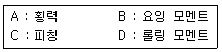
- A, C
- B, C
- A, B, C
- A, B, D
(정답률: 61%)
5과목: 자동차전기
81. 1kW인 기동전동기의 회전수가 2200rpm, 기동전동기의 피니언 잇수가 8개, 플라이휠의 링기어 잇수가 65개라면, 플라이휠 링기어의 회전력은 약 몇 Nㆍm인가?
- 20.5
- 25.3
- 35.3
- 55.3
(정답률: 24%)
82. 하이브리드 자동차의 모터 취급 시 유의사항이 아닌 것은?
- 엔진 룸 내부를 고압 세차하여 모터에 이물질이 없도록 관리한다.
- 모터 수리작업은 반드시 안전절차에 따라 점검한다.
- 엔진가동 중 모터에 연결된 고전압 파워 케이블을 탈거하지 않는다.
- 시동키 2단(IG ON) 또는 엔진 시동상태에서는 고전압 배선을 탈거하지 않는다.
(정답률: 65%)
83. 자동차 정기검사에서 등화장치 검사 시 2등식 전조등의 주행빔 광도는 몇 칸델라 이상이어야 하는가?
- 12000
- 15000
- 45000
- 112500
(정답률: 61%)
84. 차량 추돌 후 배터리 전원이 차단되는 응급상황에서 에어백 인플레이터에 전원을 공급하는 것은?
- 클럭 스프링
- 프리 차져 릴레이
- BCM 내부의 콘덴서
- 에어백 컴퓨터 내부의 콘덴서
(정답률: 50%)
85. 역방향의 전압이 어떤 값에 도달하면 역방향 전류가 급격히 증가하여 흐르게 되는 다이오드는?
- 발광 다이오드
- 포토 다이오드
- 제너 다이오드
- 트리 다이오드
(정답률: 69%)
86. 상호유도작용에 대한 설명으로 옳은 것은?
- 도체에 전류가 흐를 때 도체 주위에 자장이 형성하는 현상
- 자석의 영향으로 자석이 아닌 물체에 새롭게 자기가 나타나는 현상
- 전기회로에서 자력선이 변화할 때, 옆의 다른 전기회로에 기전력이 발생하는 현상
- 유도전압에 의해 흐르는 전류는 도체 내의 자속변화를 방해하는 방향으로 발생하는 현상
(정답률: 35%)
87. 좌측 방향지시등은 정상 작동하나, 우측 방향지시등은 작동하지 않는 원인으로 옳은 것은?
- 플래셔 유닛 파손
- 포토센서 간헐작동 불량
- 우측 방향지시등 램프 단선
- 좌측 방행지시등 램프 단선
(정답률: 63%)
88. 자동차 에어백장치의 구성품이 아닌 것은?
- 인플레이터
- 클럭 스프링
- 이모빌라이저
- 안전벨트 프리텐셔너
(정답률: 70%)
89. 교류발전기에서 교류 전압이 발생되는 부위는?
- 로터
- 정류자
- 스테이터
- 다이오드
(정답률: 45%)
90. 냉방시스템에서 작동유체가 흐르는 순서로 옳은 것은?
- 압축기 → 응축기 → 건조기 → 팽창밸브 → 증발기
- 압축기 → 건조기 → 팽창밸브 → 증발기 → 응축기
- 압축기 → 증발기 → 건조기 → 팽창밸브 → 응축기
- 압축기 → 증발기 → 응축기 → 팽창밸브 → 건조기
(정답률: 66%)
91. 가솔린 엔진에 적용된 산소센서의 취급 시 주의 사항으로 틀린 것은?
- 강한 충격을 주지 않도록 한다.
- 출력전압을 단락시키지 말아야 한다.
- 산소센서 점검 시 저항을 측정하여야 한다.
- 전압 측정 시는 디지털미터를 사용하여야 한다.
(정답률: 65%)
92. 엔진이 고전압 배터리의 충전에만 사용되고 동력전달용으로는 사용되지 않는 하이브리드 차량의 형식은?
- 직렬형
- 병렬형
- 복합형
- 직ㆍ병렬형
(정답률: 50%)
93. 6A의 전류로 연속 방전하여 14시간이 지나서 방전종지전압에 이르렀다면, 이 축전지의 용량은 몇 Ah인가?
- 42
- 66
- 72
- 84
(정답률: 54%)
94. 에어컨장치 정비 시 냉매의 원활한 작동과 수명연장을 위한 주의사항으로 틀린 것은?
- 연결부를 분리하기 전에 연결부의 먼지, 오일을 깨끗이 닦아 낸다.
- 에어컨의 분해된 부품은 필요 이상으로 공기 중에 노출시키지 않는다.
- 연결부를 분리하였을 경우 캡, 플러그 및 테이프 등으로 연결부를 밀봉한다.
- 합성(APG) 냉동유를 사용할 경우에 광물성 오일을 혼합하여 컴프레셔의 작동을 원활하게 한다.
(정답률: 68%)
95. 기동전동기가 약하게 돌아가는 원인으로 옳은 것은?
- 기동전동가 계자코일이 단락되어 자력이 커졌다.
- 배터리 (＋)단자의 접촉이 불량하여 만은 전류가 흐른다.
- 기동전동기 B단자의 접촉이 불량하여 전압강하가 크다.
- 기동전동기 마그네틱 스위치의 풀인코일에 전류가 많이 흐른다.
(정답률: 56%)
96. 자동차용 교류발전기의 내부 다이오드에 대한 설명으로 틀린 것은?
- 주로 게르마늄 다이오드를 사용한다.
- 정류용 다이오드는 일반적으로 6개를 사용한다.
- 스테이터 코일에서 발생한 교류를 직류로 변환시킨다.
- 배터리에서 발전기로 전류가 역류하는 것을 방지한다.
(정답률: 56%)
97. 12V의 기전력이 인가된 회로에서 저항이 10Ω인 경우 10초 동안의 전력량이 모두 열로 소비되었을 때의 열량은 약 몇 cal인가?
- 17.28
- 26.28
- 34.56
- 46.46
(정답률: 29%)
98. 점화플러그에 대한 설명으로 틀린 것은?
- 점화플러그의 온도 특성에 따라 냉형ㆍ열형플러그로 나뉜다.
- 냉형은 저속 주행에 적합하고 열형은 고속주행에 적합하다.
- 점화플러그의 열방산 정도를 수치로 나타낸 것을 열값(heat value)이라고 한다.
- 정상적인 점화를 위해 점화플러그 전극부의 자기청정온도를 유지하여야 한다.
(정답률: 64%)
99. 차체 전장품이 증가하면서 도입된 LAN(local area network)시스템의 장점으로 틀린 것은?
- 설계 변경에 대한 대응이 용이하다.
- 스위치, 액추에이터 근처에 ECU를 설치할 수 있다.
- 전기기기의 사용 커넥터 수와 접속 부위의 감소로 신뢰성이 향상되었다.
- 자동차 전체 ECU를 통합시켜 크기는 증대되었으나 비용은 감소되었다.
(정답률: 61%)
100. 전자제어 점화장치의 드웰시간(dwell time)에 관련된 설명으로 옳은 것은?
- 드웰 시간이 길면 점화시기가 빨라진다.
- 드웰 시간과 감쇠진동 구간은 항상 비례한다.
- 점화코일에 흐르는 전류가 차단되고, 점화플러그에 불꽃이 발생하는 시간이다.
- ECU가 파워트랜지스터의 베이스 단자에 전원을 공급하는 시간이다.
(정답률: 60%)
리벳이음에서 강판의 효율은 리벳과 강판 사이의 접촉면적과 리벳의 수에 따라 결정된다. 이 때, 피치 p는 리벳 간의 중심 간격을 의미하고, 리벳구멍의 지름 d는 리벳의 직경을 의미한다.
따라서, 리벳이음에서 강판의 효율을 나타내는 식은 "접촉면적 / (리벳의 수 x 리벳구멍 면적)"으로 표현할 수 있다. 이 때, 접촉면적은 (p-d) x t로 계산할 수 있다. 여기서 t는 강판의 두께를 의미한다.
따라서, "(p-d)/p"는 "(p-d) x t / (리벳의 수 x π x (d/2)^2)"로 계산할 수 있으며, 이는 강판의 효율을 나타내는 식으로 옳다. 이 식은 리벳 간격(p)이 커질수록, 리벳구멍 지름(d)이 작아질수록 강판의 효율이 높아진다는 것을 의미한다.